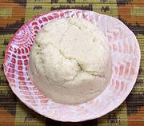

|
Nshima of Corn / MaizeAfrica S: - See Names | ||||
| Makes: Effort: Sched: DoAhead: |
1 # ** 20 min Yes |
Nishma (by Many Names) is the main dish of Southern Africa, instead of rice. It is made from Corn Flour / Maize Meal rather than Cassava or Yam as in West and Central Africa. | |||
| Here in North America we use mostly rice instead, because Nshima has to be served fresh and warm. With just one cook in the kitchen, there's no-one to stir the Nshima. See also Comments. | |||||
|
1/2 1 1 2 |
c c c c |
Corn Flour (1) Water, Cold Corn Flour (more) Water, Boiling |
Make - (20 min)
|